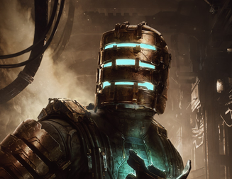

Red Dead Redemption 2 es un videojuego de aventura y acción desarrollado por Rockstar Games. La historia se desarrolla en el oeste salvaje del año 1899, siguiendo a Arthur Morgan, un miembro de la banda de los Van Der Linde.

Dead Space es un videojuego de terror y ciencia ficción desarrollado por Visceral Games. La historia se desarrolla a bordo de la estación espacial USS Titan, donde el ingeniero Isaac Clarke debe luchar contra horrores alienígenas en una misión para salvar su vida.

Elden Ring es un videojuego de rol y aventura desarrollado por FromSoftware. La historia se desarrolla en el mundo ficticio de Elden Ring, donde el jugador asume el rol de un héroe que debe explorar este vasto universo y enfrentarse a desafíos épicos.